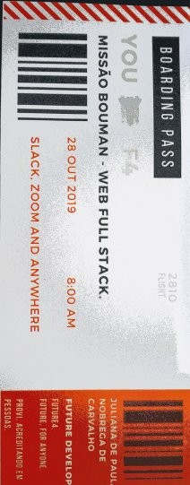

#futuredevoloper #multiskillgestão
Hello, world! Meu nome é Juliana Carvalho, multiskill de formação e atuação,no momento future Devoloper na Future 4 em tempo integral.Sou mulher, negra, filha, esposa e profissional apaixonada pelo desafio de ressignificar propósitos de vida e negócios através da tecnologia.
